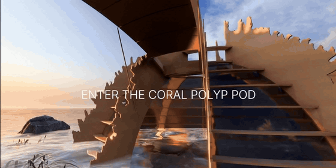

Motivation
Inspired by our acoustic enrichment studies off the windward reefs of O'ahu, Hawai'i ~ we demonstrated enhanced coral recruitment and survival using acoustic enrichment, artificial reef structures, and nanoengineered biofilms.
The idea of Polypod was born from these studies, serving as a spatial and interactive installation to convey the acoustic environment of coral reefs from the "larvae perspective"
